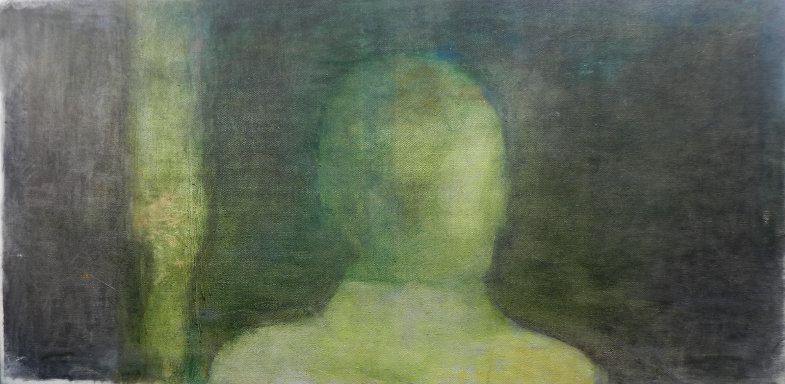

Tehnici și materiale
Ulei pe pânză și ulei pe lemn. Tehnici clasice: pigment cu ou - luat din arta bizantină - pe pânză, lemn și hârtie manuală. Pe hârtie manuală: tehnică mixtă și, legat de această tehnică mixtă: acrilic, tempera și tuș pe hârtie. Pentru a aduce un elogiu istoriei picturii-mozaic, folosesc și piatră de mozaic adusă din Ravenna. Mai folosesc sticlă sintetică adusă din Asia, lemn adus din America de Sud și bucăți de plastic cauciucat.
Ca suport: lemn de cocos, dar și pânză din care se fabricau, în sec. XIX, hărțile, ce are în componența sa mătase naturală subțire. Suporturile vin adesea suprapuse: uneori suprapunerile pot fi cartoane preparate în tehnică mixtă pe lemn. Mai folosesc pentru instalațiile - pe care le numesc „sacre” - suprapuneri pe lemn. To pe aceste suporturi: pânză de canvas. Mai lucrez cu lemn stratificat: până la 8 rânduri de lemn. Tot acest lemn intră în componența ramelor.
Lucrez în frească ca elogiu adus artei bizantine: fresca-tablou în cutie și fresca cu câlți.
Nu îmi place să vorbesc când lucrez. Folosesc tehnici idiosincratice pe care mai greu le pot descrie, precum tehnica de lipici de acrilic cu ulei și acrilic pe apă. În general, mă pasionează tehnicile. Mă interesează aspectul de somatizare și de biologic și de trecere în rezumat a tehnicilor de pictură în istoria artei, cât și a celorlalte tehnici care se raportează la formă și pot fi abstractizate.
Caut valențe ideologice ale picturii în plan cultural, o aspirație spre o contribuție în planul creației; o pictură care creează o ideologie.
Folosesc și tehnica transferului de imagine, transfer care trebuie să păstreze intacte virtuțile plastice ale tabloului.
Îmi procur materiale din magazinele de mozaic decorativ de la Ravenna, din papetării cu marfă din Occident, cât și din magazinele de artă care au ca specific hârtia.

Am realizat desene după Tarkovski - precum capul de copil din filmul Copilăria lui Ivan în tehnica pigment cu ou - ca studii făcute din pensulă. Consider că nu trebuie să imiți secolele anterioare, chiar dacă respecți perioada clasică. În interiorul tabloului trebuie să reziste un studiu de accente de lumină, studiu care poate să respire.